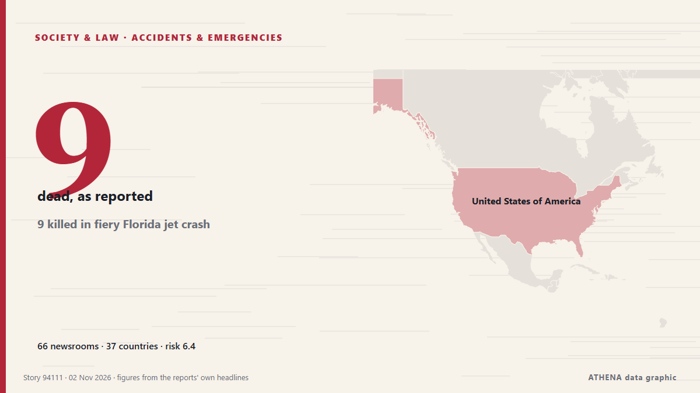

Accidents & emergencies
SponsoredPresented by  Cybernetics and Artificial Intelligence Lab Welcome to the Cybernetics and Artificial Intelligence Laboratory, established at the Department of Business Administration of the National
Cybernetics and Artificial Intelligence Lab Welcome to the Cybernetics and Artificial Intelligence Laboratory, established at the Department of Business Administration of the National
| 20 Oct | 0 |
|---|---|
| 21 Oct | 0 |
| 22 Oct | 0 |
| 23 Oct | 0 |
| 24 Oct | 0 |
| 25 Oct | 1 |
| 26 Oct | 0 |
| 27 Oct | 1 |
| 28 Oct | 3 |
| 29 Oct | 7 |
| 30 Oct | 4 |
| 31 Oct | 3 |
| 1 Nov | 5 |
| 2 Nov | 0 |

9 killed in fiery Florida jet crash
The Learjet 60 was carrying nine people when it crashed in a residential area in Palm Beach County, federal officials say. from Sydney Morning Herald
Multiple shootings on Halloween leaves 4 dead, 15 injured
At least 3 victims remain in critical condition following shooting at Fairfield mall, as police search for suspect. from Express Tribune
Five teenagers stabbed at Halloween party
Five teenagers have been seriously injured after being stabbed at a Halloween party, police have said. from MyJoyOnline
At least 68 people die in major Spanish train crash
The collision brings back memories of the January train crash in Adamuz, which killed 46 people. from Politico Europe
Strike at industrial complex in Saudi Arabia's Dammam causes huge fire: Iranian state media
TEHRAN, Nov. 01 (MNA) – A major fire erupted at an industrial facility in Dammam, eastern Saudi Arabia, following a reported Yemeni attack. from Mehr News (English)
Spanish village gathers for memorial Mass for train crash victims
Investigators are looking into the cause of one of Europe's deadliest rail disasters this century. from CNA (Channel NewsAsia)
PICTURED: ‘Hero’ driver, 36, of doomed Renfe train in Toledo rail disaster whose last-minute actions ‘saved hundreds of lives’
His heartbroken family say he hit the emergency brake in the final moments before the collision, saving the lives of hundreds of passengers. from The Olive Press
Egypt minibus crash outside Cairo kills 10, injures 24
The accident was the latest in a string of fatal road incidents in Egypt, where traffic accidents remain a persistent public safety challenge. from Free Malaysia Today
Hong Kong has released the full report on Tai Po fire tragedy. Here’s all you need to know
We have put together 10 stories from our coverage on the full report of the Wang Fuk Court fire, released almost a year since the tragedy claimed 168 lives. from South China Morning Post
India helicopter crash in Himalayas kills 6
Police said efforts were under way to recover the bodies from the remote crash site, while the cause of the accident remained unknown. from Free Malaysia Today
Horror midair crash in Oregon kills UK student pilot as two helicopters collide
A student pilot from the UK is among three people killed after two helicopters collided in Oregon, United States. from Chronicle Live (Newcastle)
Traffic Control Errors Caused Spain’s Deadly Train Crash, Official Says
The transport minister said a judge would investigate controllers’ actions, including authorizing a train to proceed at high speed though another was stalled in front of it. from The New York Times (World)
A helicopter with the EU force in Bosnia crashes, reportedly killing 3 and injuring 12
A Italian helicopter of the European Union peacekeeping force in Bosnia has crashed in the country’s north. from ABC News (International)
Spain’s transport minister refuses to resign over Toledo train crash as elections loom
Oscar Puente ruled out stepping down at a press conference at the Transport Ministry in Madrid on Friday. from The Olive Press
3 dead in rock spire collapse at tourist site in Turkiye's Cappadocia
A landslide triggered by heavy rainfall caused a rock spire to collapse in Turkiye’s Unesco World Heritage-listed Cappadocia region on Thursday, bringing the death toll to three, officials said. from Dawn
Spanish long jumper Julieta Gallego among victims of deadly train collision
Julieta Gallego, who competed for Madrid-based AD Sprint, among those killed in train crash in Spain. from Al Jazeera English
Spain working 'tirelessly' to identify train crash dead: PM
Relatives of the victims have endured an agonising wait for news as rescue crews sift through the wreckage of tangled metal and bodies are examined in morgues. from CNA (Channel NewsAsia)
High-speed train collision in Spain: 68 dead, more than 100 injured
MADRID: At least 10 people have died after a major collision involving two high-speed passenger trains in the central Spanish province of Toledo.The accident prompted the suspensi... from Oman Observer
One killed, five injured by Afghan firing near Angoor Adda
LOWER SOUTH WAZIRISTAN: In yet another violation of border protocols, Afghan security forces opened unprovoked fire on Pakistan Army border posts and residential areas in the Angoor Adda border… from Dawn